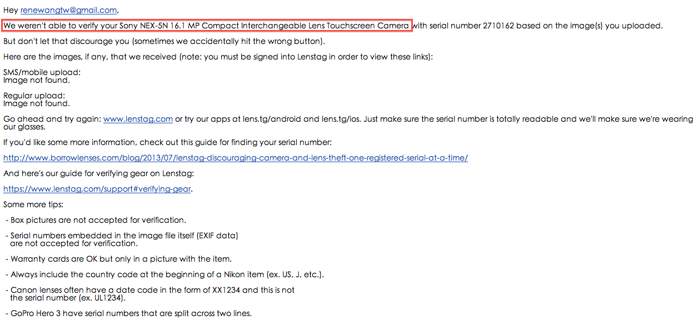

|
| 努力咬著牙刷造型的潔牙骨，難道 Oreo 要扮演福爾摩斯幫忙尋找相機嗎？（妹妹攝） |
首先，數位相機光機身動輒要台幣萬元，金錢上的損失的確讓拿著固定薪水的上班族吃不消，更別說在相機裡面的記憶卡還保存著旅途中的珍貴回憶。幸好，因為網路科技的發達，資訊的傳遞可以說是無遠弗屆。熟知網路力量，平常窩在家裡的科技新貴，便想到了可以架設登錄相機和鏡頭型號的網站，利用世界群眾的力量，讓在黑市內販賣的失竊相機無所遁形！
由 google 的工程師，Trevor Sehrer 所創立的 Lenstag.com 根據這樣的理念，目的就是希望透過網路的力量，讓大家協尋失竊的愛機。首先，看看由 Lenstag 網站統計的去年遭到最多失竊相機的數據。
 |
| 相片來源 PetaPixel |
根據這些數據，原來去年遭到失竊最多的機型還是來自數位相機的大廠， Nikon D7000 和 Cannon 的 60D （啊！真是太高興啦！顯然 Sony 還不是相機小偷的目標呀！）。而最讓人驚訝的應該是失竊的方式，高居榜首的居然是在車上和自己的家裡呀！果然，最容易失竊的地方，往往就是自己覺得最安全的地方。不過接下來，就是在假期中遺失了。雖然，我覺得要找回失竊的相機應該是比登天還難，但是，這個網站的另外一個附加價值，就是提供了失竊相機的序號名單。在購買二手相機之前，花一點時間查看這個名單，就可以避免在相機和鏡頭二手市場裡買到黑心贓貨呀！
網站的註冊非常簡單，只需要電子郵件和私人的密碼，不需要填寫許多的私人資料。接下來，就是我為我的 Sony NEX 5N 註冊的實況報導。
一旦從首頁成功註冊了網站，就會進入到主畫面。網站的界面相當簡單明瞭，平常有界面使用困難的我，經常迷失在繁複的選單和子選單裡，也能很快的找到 “Add gear” 按鈕。而搞不清楚自己的相機是什麼型號的，在鍵入關鍵字後，會出現提示，這真的是非常方便呀！
 |
| 網站的設計非常人性化，還會自己跳出提示來 |
快速地填完間單的表單，就會發現剛剛加入的相機狀態變成未認證 （Unverified）。原來，Lenstag 網站，需要使用者上傳一張相機序號的照片，用以證明所登錄的相機也是相機的持有人。在把相機翻來覆去，非常不確定序號倒底在機身的哪裡，我勉強的用猜測照了一張相，然後透過手機上傳至 Lenstag 網站上，馬上登錄相機的狀態從未認證改成等待認證中 （Pending verification）。

|
| 加了相片之後，就會由 Unverified 轉成 Pending verification 的狀態 |

原來我的相機在服務了兩年之後，底座的標籤貼紙早就磨損，用肉眼辨識型號本來就很困難了，更何況是用相機照過再交由人工辨識。以下就是完全看不出來型號的相片。聽說 Lenstag 網站是利用人工來認證相機照片，看來我這張完全失敗的照片，只能用來確認 Lenstag 義工是否有認真執行認證的工作了。
 |
| 完全看不出來型號的照片 |
果然過沒幾天我就收到了 Lenstag 網站非常有效率地宣告我認證失敗的信件（其實任何一個沒有重大缺失的圖形辨認軟體都會拒絕我的照片吧！）不過信件也指出保證卡加上相機的照片也可以接受。看來，要讓我的 Sony NEX 5N 受到妥善的保護，還有一小段的路要走呀～
所以，至今我的 Sony NEX 5N 還是屬於失竊後完全找不回來的未保護名單中～～～嗚嗚嗚～～～
(背景音樂：希區考克的驚魂記)
|  |
| 果然敬業的 Lenstag 員工拒絕了我模糊不清的相片 |
{kind=link}